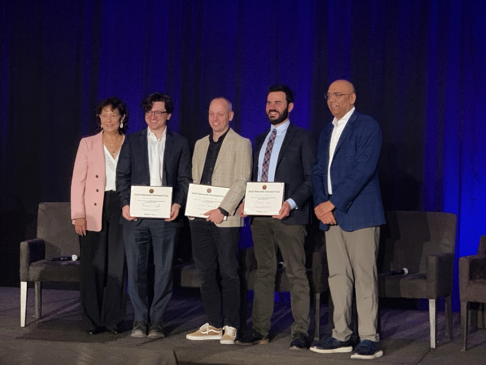
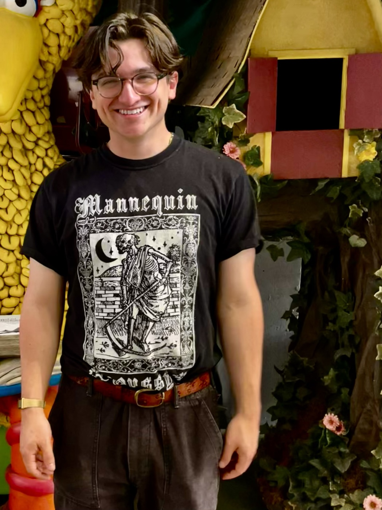
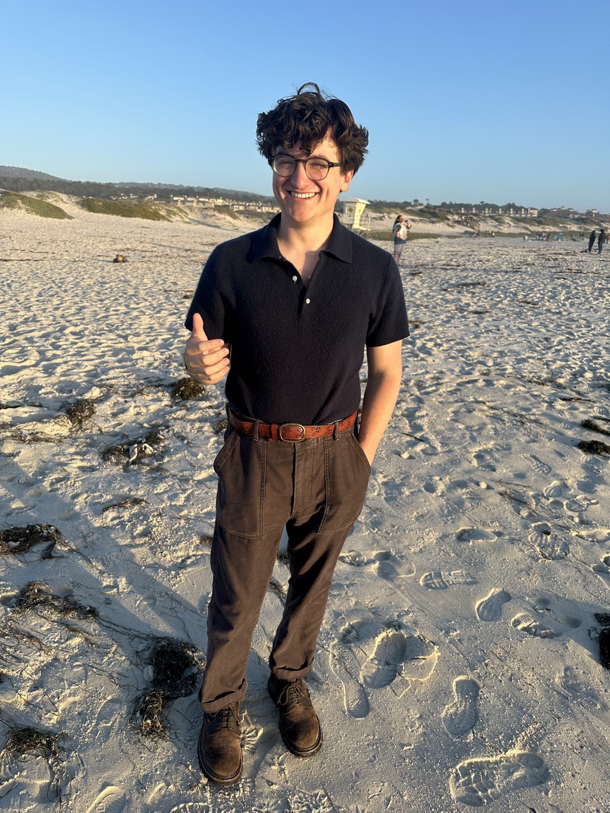
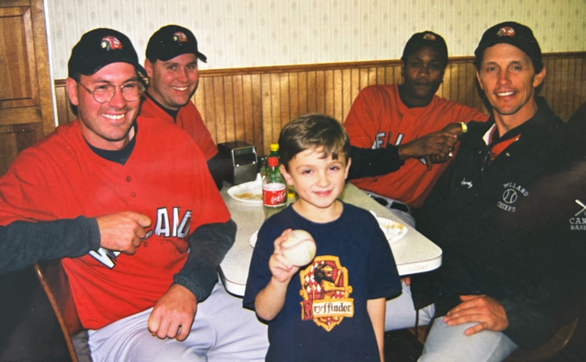

Assistant Professor, Department of Social and Decision Sciences, Carnegie Mellon University.
Email · Google Scholar · CV (pdf) · Complete publications · Likes

I am an Assistant Professor in Social and Decision Sciences at Carnegie Mellon University, with appointments as Affiliated Faculty at the Human-Computer Interaction Institute and as a Research Affiliate at MIT’s Sloan School of Management. My research integrates psychology, political science, and human-computer interaction to examine where our viewpoints come from, how they differ from person to person, and why they change. I also study the sweeping impacts of artificial intelligence on individuals and society.
I did my B.A. in psychology and philosophy at Binghamton University, writing an honors thesis with Steven Jay Lynn on whether belief in determinism makes people more depressed — and whether belief in free will is protective. From Binghamton I went to Emory University for my Ph.D. in psychology (M.A. 2018, Ph.D. 2022), advised by Scott O. Lilienfeld from 2016 to 2020 and by Arber Tasimi from 2021 to 2022. Emory also trained me as a clinician: three years in the Emory Psychological Clinic (2016–19) and a year in adult outpatient care at Atlanta’s Grady Hospital (2018–19). Scott passed away in 2020, and his influence on my thinking about psychology, skepticism, and intellectual honesty remains profound.
After Emory came a postdoctoral fellowship at MIT Sloan (2022–24) with David Rand and Gordon Pennycook, with whom I began using large language models as instruments for studying belief change; the first paper from that collaboration ran as the cover of Science in 2024. I then spent a year as an Assistant Professor of psychology at American University (2024–25) before moving to Carnegie Mellon in 2025.
My work has been supported by federal agencies, philanthropic foundations, and corporate sponsors, and has been published in top peer-reviewed outlets, including Science, Nature, Nature Medicine, Journal of Personality and Social Psychology, Psychological Bulletin, and Trends in Cognitive Sciences. It has been featured in outlets such as The New York Times, BBC World News, and NPR. I developed DebunkBot.com, a public tool for combating conspiracy theories with AI.
I have been awarded the Rising Star award from the Association for Psychological Science, the Klarman Fellowship from Cornell University, the Heritage Dissertation Research Award from the Society for Personality and Social Psychology, and the JS Tanaka Dissertation Award from the Association for Research in Personality. In T-ball, I hit a stand-up triple, and it’s all been downhill from there.
My work began with theory and measurement problems in political psychology. Familiar psychological categories — authoritarianism, cognitive and ideological rigidity, extremism — are often too coarse, polysemic, and multiply determined to explain political cognition. Two people can receive the same score on an authoritarianism scale, a conspiracy scale, or an attitude item for almost opposite reasons, and standard instruments hide exactly the heterogeneity that determines when and why minds change.
My recent work uses generative AI to make the person-level study of belief systems tractable — the program described under the Viewpoints Lab, below.
Durably reducing conspiracy beliefs through dialogues with AI
— Science, 2024 (cover story).
Costello, Pennycook & Rand. Participants described a conspiracy theory they
believed and explained why they found it compelling; a frontier LLM then addressed
their reasons with evidence. The dialogues reduced conspiracy beliefs by roughly
20 percent on average, the effects persisted for at least two months, and they
generalized across a wide range of conspiracies — including strongly held,
identity-relevant beliefs.
Clarifying the structure and nature of left-wing authoritarianism
— JPSP, 2022.
Costello, Bowes, Stevens, Waldman, Tasimi & Lilienfeld. Much of the historical
literature measured authoritarianism through right-wing ideological content,
leaving a core question unresolved: are some individuals on the left disposed to
authoritarianism? We address this longstanding problem, showing that authoritarian
tendencies exist on the political left as well as the right and encouraging a
re-description of authoritarianism as a broader psychological tendency toward
illiberalism — work that became the most cited JPSP article published
in 2022.
Revisiting the rigidity-of-the-right hypothesis: A meta-analytic review
— JPSP, 2023.
Costello, Bowes, Malka, Baldwin & Tasimi. The field had long treated political
conservatism, cognitive rigidity, and motivational needs for certainty and safety
as a psychological syndrome. This meta-analysis finds that the relationship
between ideology and cognitive rigidity is instead contextually contingent,
heterogeneous, and measure-dependent — varying with how conservatism is
defined, where the data are collected, and who populates the sample.
Thinking outside the ballot box
— Trends in Cognitive Sciences, 2023.
Costello, Zmigrod & Tasimi. A theoretical synthesis arguing that the field
needs a higher-resolution science of social and political belief — one that
studies the content, structure, and dynamics of belief systems rather than
treating ideology as a small set of latent dimensions.
Large language models as disrupters of misinformation
— Nature Medicine, 2025.
Costello. An essay on whether highly persuasive AI systems will harm or help the
epistemic practices of humanity. Many warn, with reason, that AI may amplify
misinformation or atrophy our critical faculties; I make the case for cautious
optimism.
Several working papers extend the AI-persuasion program.
DebunkBot.com — public tool.
The public version of the chatbot from the Science study: anyone can
describe a conspiracy theory they believe and talk it through with an AI that
responds with evidence. It has now held more than 150,000 conversations with
members of the public.
All publications and working papers

With Gordon Pennycook and David Rand at the AAAS Newcomb Cleveland Prize ceremony, 2026.
A political position is a compressed thing. It folds together what a person believes the world is, what they want it to become, and which strategies they think connect the two — and all three are assembled from information that reached them secondhand, through a vast distributed network of testimony and reporting (news, experts, political leaders, friends, social media, search engines). Different paths through that network leave people with genuinely different pictures of the world in their heads, so that much of what looks like irrationality, conspiracism, or extremism may be ordinary reasoning running on different inputs.
The goal is a behavioral science of viewpoints: one able to measure the systems of reasons that lead people to hold specific views, test how those systems come to be and evolve, and inform interventions that help align the pictures of the world in people’s heads with the world as it actually is. For most of the social sciences’ history, this was a virtually intractable problem: the only feasible means of mapping why a person holds a view, rather than establishing only that they hold it, is something like a long and probing conversation, and that could not scale. Large language models make it tractable — they can serve as scalable semi-structured interviewers and experimental confederates, eliciting the beliefs and evidence behind a specific person’s claim and responding to exactly that, what we term epistemic personalization. We use them in both directions: to chart how viewpoints are built, and to test what changes them.
Current projects, briefly.
Belief mapping — an AI interviewer that, over a 15-minute conversation, elicits a person’s beliefs, values, causal assumptions, trusted sources, and perceived tradeoffs on a contested issue and builds a DAG-like map of how each belief relates to the others. AI research agents then assemble evidence briefs aimed at key joints in each person-specific map.
Mechanisms and boundary conditions — why does AI-facilitated belief change work, and when does it fail? Across eight variations of the conspiracy-debunking paradigm, belief reduction held in seven; the effect collapsed only when the AI was prompted to persuade without presenting any facts.
Dual-use persuasion — the same machinery that debunks can “bunk”: in our experiments, models instilled false beliefs about as easily as they dispelled them, and standard guardrails did essentially nothing to block this use. Constraining models to true arguments restored an asymmetry in favor of truth.
Ambient AI influence — chatbots have become daily thinking infrastructure for hundreds of millions of people. In a two-month field study, participants use a research-instrumented assistant in place of their normal chatbot; after a baseline period, its responses are randomly varied to test whether routine AI use shifts political conclusions — and whether users notice.
Rapid response — testing whether AI dialogues can reduce belief in conspiracy theories as they emerge: after high-salience events, before false narratives have fully crystallized.
DebunkBot.com — the public version of the conspiracy-debunking tool, described above.
The lab is Thomas Costello (director) and Ph.D. students Kenneth Diao, Duncan Wood, and Ali Levontin, all in Social and Decision Sciences.
We are hiring a postdoctoral researcher — email a CV and a short note about what you would want to study. Ph.D. students apply through the CMU Social and Decision Sciences doctoral program, naming me in their application; prospective students, and undergraduate or post-baccalaureate researchers, are welcome to email beforehand.
Thinking in Person vs. Thinking Online — Department of Social and Decision
Sciences, Carnegie Mellon University, Spring 2026.
Psychology of Politics — Department of Psychology, American University, 2025.
Research Methods — Department of Psychology, American University, 2024.
I serve on the editorial board of Political Psychology (2025–), with editors-in-chief Mark Brandt and Elizabeth Suhay.
On air, the work has appeared on NBC Nightly News, BBC World News, and CNN’s Terms of Service (2024). I have also written for general readers — Chatbots are surprisingly effective at debunking conspiracy theories (MIT Technology Review, 2025, with Gordon Pennycook and David Rand) and Popper was right about the link between certainty and extremism (Psyche, 2022, with Shauna Bowes).
Selected talks include the U.S. Department of State (“The promise and peril of AI persuasion,” Get Smart Series, 2025); a keynote at NLP4Democracy, Conference on Language Modeling (2025); the Santa Fe Institute’s CounterBalance series on Applied Belief Dynamics (2025); and the White House Information Integrity R&D Interagency Working Group, NSC & OSTP (“Persuasion via generative AI,” 2024).
Complete lists of coverage and talks appear in the CV. For media inquiries, email is the fastest route; a line about your outlet and deadline helps.
I value open science and adversarial collaboration, and if you think I’m wrong about something, I’d like to hear why. Some things I like are here.



thcostello1@gmail.com
Baker Hall, Carnegie Mellon University — Department of Social and Decision
Sciences, 5000 Forbes Avenue, Pittsburgh, PA 15213
CMU faculty page ·
ORCID ·
Twitter/X ·
Bluesky ·
LinkedIn
Last updated June 2026. Future.